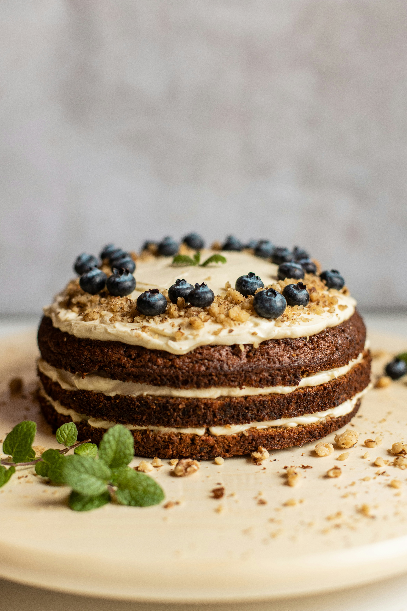

Home
Cake

Description
The recipe for this cake will be provided below
Ingredients
- 1 tsp butter
- 400g frozen blueberries
- 335g flour plus a spoonful for the berries
- 275g caster sugar
- 2 eggs
- 165ml vegetable oil
- 2 tbsp lemon zest
Steps
- Heat the oven to 200C/180C fan/gas 6. Butter a 22cm cake tin and line the base with baking parchment.
- Put a third of the frozen blueberries aside, sprinkle the rest with flour and set aside (do not defrost first).
- Beat the sugar and eggs together in a large bowl until smooth, then add the vegetable oil, lemon zest and juice and the yogurt. Combine the wet ingredients with the flour, baking powder and a pinch of salt using a whisk. Don’t worry if a few lumps remain.
- Add the blueberries that were mixed with flour.
- Pour the cake mixture into the prepared tin and sprinkle the remaining berries on top. Put the tin in the oven, reduce the temperature to 180C/160C fan/gas 4 and bake for 1 hr 10 mins-1 hr 20 mins, or until a skewer inserted into the cake comes out clean.
- Remove from oven and set aside to cool. After removing from the baking tin, sprinkle the cake with icing sugar, if you like.